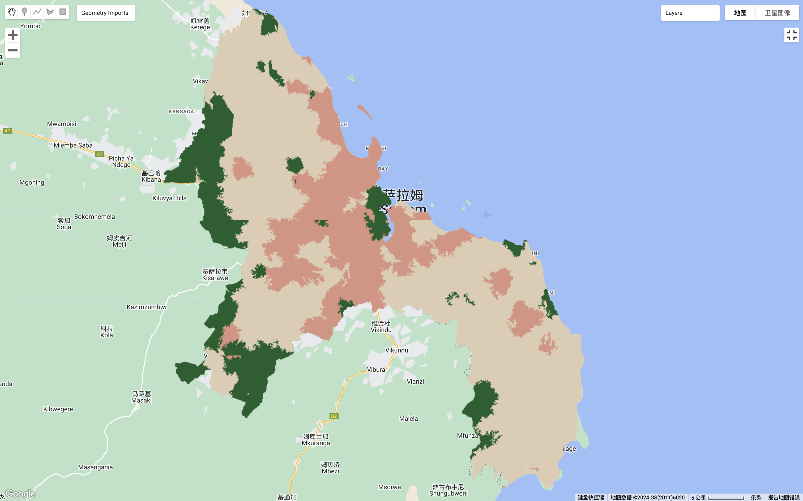

8 Week 8 - Classification II
8.1 8.1 Summary
I have taken what I have learnt this week and reviewed the course material and organised it into the following mind map for convenience of review and understanding:
Mind map of week 8 summary
The following 8.1.1 and 8.1.2 summarise the content of all the sub-elements listed in the mind map:
8.1.1 8.1.1 Land Cover Classification (Continued)
The need for landcover data (current or historical):
- Historical and current land cover data are crucial for understanding changes on the Earth’s surface, urban expansion, and managing natural resources effectively.
The use of pre-classified data:
- Utilization of pre-classified data sources such as GlobeLand30, the European Space Agency’s Climate Change Initiative (CCI) annual global land cover data, and Dynamic World’s near real-time 10m resolution data is highlighted.
The Dynamic World project:
It shows the application of AI methods for processing Sentinel-2 satellite images to estimate tree cover, urban density, or snow coverage for each pixel, encompassing data handling, preprocessing, normalization, and the classification process with Fully Convolutional Neural Networks (FCNN) and Convolutional Neural Networks (CNN).
Accuracy Assessment:
Confusion matrices are used to assess classification accuracy, though their applicability may be limited for real-time updates or different product comparisons.
Dynamic World data could be compared by other LULC datasets globally and regionally, like ESA CCI, CGLS ProbaV, ESA Sentinel-2 GLC, MapBiomas, and USGS NLCD, to validate accuracy at specific locations in Brazil, Norway, and the United States, involving resolution and land cover class distribution comparisons.
Object-Based Image Analysis and Sub-Pixel Analysis:
Object-Based Image Analysis (OBIA) uses the SLIC algorithm to cluster pixels into superpixels based on homogeneity or heterogeneity.
Sub-pixel analysis techniques, including sub-pixel classification, Spectral Mixture Analysis (SMA), and linear spectral unmixing, aim to quantify the proportions of different land cover types within a single pixel.
8.1.2 8.1.2 Accuracy Accessment
Accuracy Assessment in Remote Sensing and Machine Learning
Producer’s accuracy, user’s accuracy, and overall accuracy serve as primary metrics for classification model performance evaluation.
The Kappa coefficient is employed to measure image classification accuracy, despite its controversies.
ROC curves and AUC values are further utilized to evaluate binary classifier performance.
F1 Score: The F1 score, a harmonic mean of precision and recall, is crucial, especially in the context of imbalanced datasets. It provides a balance between the precision (user’s accuracy) and recall (producer’s accuracy), serving as a singular metric to assess binary classification systems where false positives and false negatives might have different implications.
Challenges in Accuracy Assessment
The procurement of suitable test data for accuracy evaluation involves strategies like using new datasets, implementing train/test splits, and applying cross-validation techniques.
Spatial cross-validation methods for spatial autocorrelation issues between training and testing data sets is used to mitigate the impact of geographical proximity on model evaluation, ensuring that the training and testing data are sufficiently separate to provide an accurate assessment of model performance.
8.1.3 8.1.3 Practical
Summary of this week’s practical:
Vector Data Processing:
- Loaded Level 2 Global Administrative Unit Layers (GAUL) and styled them on the map. By setting the color, width, and fill color (including transparency), the practice demonstrated how to visually enhance vector data representation. Additionally, learned how to filter the dataset based on specific conditions (e.g., administrative unit names) to focus on a particular study area (e.g., Dar es Salaam).
Earth Observation (EO) Data Processing:
- Switched to using Landsat data, mastering skills in setting scale functions, loading imagery, filtering based on dates and study areas, cloud coverage filtering, applying scale functions, extracting medians, and mapping the output. Furthermore, through creating and utilizing functions, learned how to identify and mask clouds or cloud shadows using Quality Assessment (QA) bands, though it was noted that some masked areas were actually sand or suspended matter, not clouds.
Image Classification:
- Two main methods of image classification - sub pixel analysis and object based image analysis (OBIA). Sub pixel analysis involved defining land cover endmembers (e.g., urban, vegetation, and water) and calculating the fraction of each pixel’s endmembers. OBIA involved clustering similar pixels into objects using techniques like K-means and SNIC, followed by analyzing and classifying these objects.
Accuracy Assessment:
- Explored methods for assessing the accuracy of sub pixel analysis, including hardening the sub pixel image or comparing it with high resolution imagery to evaluate the precision of the classifications.
These images below show the study area and the final results of the sub pixel analysis and object based image analysis (OBIA) of the remotely sensed data of the area:
The study area is Dar es Salaam, and below is a clipped Landsat image of this area (to make it easier to compare the effects of the classification results later on):
- Study area:
Clipped Landsat image of Dar es Salaam
Sub pixel analysis:
Before I started this classification I checked the resolution of the images and found that the resolution was not very high, so some features were not easily distinguishable (I also sampled some of the polygon samples using the satellite base map from Google Maps as reference). I thought the result of the classification would be poor, but I didn’t realise that the actual result would look OK to the naked eye compared to the satellite data:
The result of Sub pixel analysis
Object based image analysis:
The effects of the result from this analysis are significantly worse compared to the previous method:

The result of Object based image analysis
Explanation for the final results:
From my observation of Landsat satellite imagery and Google Maps satellite image base map of the study area, I found that the land cover of the area is complex. The mixing of urban and forested or bare or grassy land on the surface of the area is very common. And there is a clear difference between the principle of Object-based classification method and Sub pixel analysis method:
Object based image analysis often performs poorly in areas with high spatial heterogeneity or complex land cover because it relies on spatial proximity and similarity of pixels for classification, potentially missing finer surface variations.
Sub pixel analysis examining the composition within each pixel could more intricately represent mixed land cover situations, making it more effective for capturing small-scale and complex features.
Therefore, the result of Sub pixel analysis is significantly better than the result of Object based image analysis as observed by the naked eyes comparison.
8.2 8.2 Application
Sub pixel analysis:
Vos et al. (2019) use an open-source software toolkit named CoastSat, combined with Google Earth Engine (GEE) and Sub-pixel analysis techniques, to extract time series of sandy shoreline positions from publicly available satellite images. It achieves an accuracy of approximately 10 meters (Vos et al., 2019). Sub pixel analysis, applying a robust Sub-pixel resolution shoreline detection algorithm to pre-processed satellite images, which includes supervised image classification and Sub pixel border segmentation, enhances the accuracy and detail recognition capability of shoreline mapping (Vos et al., 2019). However, this method relies on advanced image processing technologies and complex computations, requiring substantial computing resources and algorithm optimization, and may take a longer time when dealing with large-scale data. In addition, despite GEE’s powerful data processing capabilities, users need to have a certain level of familiarity and understanding of the GEE platform and related APIs. When processing extremely large datasets, performance bottlenecks or service limitations might be encountered.
Object based image analysis:
Ali et al. (2023) using object-based image analysis on the Google Earth Engine platform map the area changes of 480 glaciers on Novaya Zemlya from 1986-1989 to 2019-2021, which reveals a total glacier area reduction of 5.8%. This method has streamlined the process of generating accurate glacier outlines, enhancing efficiency (Ali et al., 2023). The object based image analysis method integrating multispectral Landsat imagery and the computational resources of Google Earth Engine automates the mapping of glacier changes and generates highly accurate glacier outlines with an overall accuracy rate of 96-97% (Ali et al., 2023). While this method effectively reduces the need for manual corrections, it may not perform well in mapping debris-covered glaciers or areas covered with fresh snow and thin cloud layers (Ali et al., 2023). Additionally, reliance on Google Earth Engine might limit access to specific datasets and advanced analysis tools.
8.3 8.3 Reflection
During this week I have gained knowledge of unfamiliar or new skills such as Dynamic World Project, Sub pixel analysis, Object based image analysis, all of which are cool and greatly enriched my knowledge of remotely sensed classification methods and accuracy assessment.
As it may be largely unfamiliar content, I was not very clear about the structure of the course content, so after reviewing the study material I put together a mind map to make it easier to quickly clarify the structure of content in future reviews. I had never come across the two classification methods sub pixel analysis and Object based image analysis before, but I was impressed with sub pixel analysis during this week’s study. I didn’t realise that sub pixel analysis could classify remote sensing images with low resolution with good results. In the future, this method could be considered for analysing the land cover of images with low resolution and complex land cover.
8.4 8.4 Reference list
Ali, A., Dunlop, P., Coleman, S., Kerr, D., McNabb, R. W., and Noormets, R. (2023) Glacier area changes in Novaya Zemlya from 1986–89 to 2019–21 using object-based image analysis in Google Earth Engine. Journal of glaciology. [Online] 69 (277), 1305–1316. DOI: 10.1017/jog.2023.18.
Vos, K., Splinter, K. D., Harley, M. D., Simmons, J. A., and Turner, I. L. (2019) CoastSat: A Google Earth Engine-enabled Python toolkit to extract shorelines from publicly available satellite imagery. Environmental modelling & software : with environment data news. [Online] 122104528-. DOI: 10.1016/j.envsoft.2019.104528.